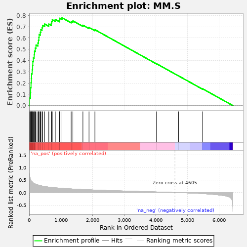
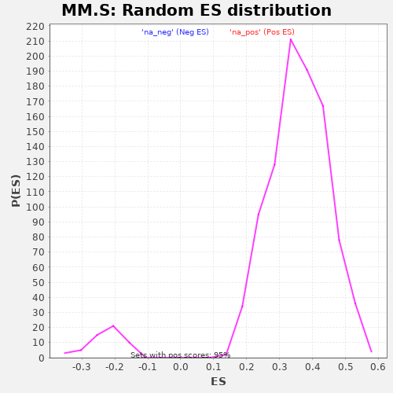

| | | Dataset | al10_v_al5 |
| Phenotype | NoPhenotypeAvailable |
| Upregulated in class | na_pos |
| GeneSet | MM.S |
| Enrichment Score (ES) | 0.7801111 |
| Normalized Enrichment Score (NES) | 2.1672528 |
| Nominal p-value | 0.0 |
| FDR q-value | 0.0 |
| FWER p-Value | 0.0 |
Table: GSEA Results Summary

Fig 1: Enrichment plot: MM.S
Profile of the Running ES Score & Positions of GeneSet Members on the Rank Ordered List
| PROBE | GENE SYMBOL | GENE_TITLE | RANK IN GENE LIST | RANK METRIC SCORE | RUNNING ES | CORE ENRICHMENT | | 1 | Atad2 | | | 10 | 0.774 | 0.0694 | Yes |
| 2 | Tyms | | | 45 | 0.528 | 0.1125 | Yes |
| 3 | Rrm1 | | | 49 | 0.514 | 0.1592 | Yes |
| 4 | Hells | | | 59 | 0.491 | 0.2029 | Yes |
| 5 | Clspn | | | 72 | 0.450 | 0.2423 | Yes |
| 6 | Uhrf1 | | | 78 | 0.443 | 0.2821 | Yes |
| 7 | Rad51ap1 | | | 95 | 0.429 | 0.3190 | Yes |
| 8 | Mcm5 | | | 111 | 0.416 | 0.3548 | Yes |
| 9 | Dtl | | | 116 | 0.409 | 0.3917 | Yes |
| 10 | Rad51 | | | 133 | 0.379 | 0.4240 | Yes |
| 11 | Slbp | | | 159 | 0.357 | 0.4528 | Yes |
| 12 | Blm | | | 170 | 0.351 | 0.4835 | Yes |
| 13 | Rrm2 | | | 194 | 0.339 | 0.5110 | Yes |
| 14 | E2f8 | | | 216 | 0.330 | 0.5380 | Yes |
| 15 | Pcna | | | 277 | 0.303 | 0.5564 | Yes |
| 16 | Prim1 | | | 294 | 0.296 | 0.5810 | Yes |
| 17 | Fen1 | | | 308 | 0.291 | 0.6057 | Yes |
| 18 | Nasp | | | 315 | 0.290 | 0.6313 | Yes |
| 19 | Pola1 | | | 354 | 0.278 | 0.6509 | Yes |
| 20 | Rfc2 | | | 368 | 0.272 | 0.6738 | Yes |
| 21 | Gmnn | | | 408 | 0.260 | 0.6915 | Yes |
| 22 | Usp1 | | | 425 | 0.255 | 0.7125 | Yes |
| 23 | Wdr76 | | | 490 | 0.241 | 0.7245 | Yes |
| 24 | Cdc45 | | | 621 | 0.215 | 0.7240 | Yes |
| 25 | Exo1 | | | 701 | 0.203 | 0.7303 | Yes |
| 26 | Rpa2 | | | 707 | 0.203 | 0.7481 | Yes |
| 27 | Mcm6 | | | 731 | 0.200 | 0.7629 | Yes |
| 28 | Chaf1b | | | 826 | 0.187 | 0.7653 | Yes |
| 29 | Pold3 | | | 962 | 0.174 | 0.7602 | Yes |
| 30 | Mcm4 | | | 967 | 0.174 | 0.7755 | Yes |
| 31 | Mcm2 | | | 1037 | 0.168 | 0.7801 | Yes |
| 32 | Casp8ap2 | | | 1328 | 0.143 | 0.7479 | No |
| 33 | Brip1 | | | 1382 | 0.139 | 0.7523 | No |
| 34 | Cdc6 | | | 1699 | 0.119 | 0.7138 | No |
| 35 | Gins2 | | | 1892 | 0.108 | 0.6937 | No |
| 36 | Tipin | | | 2078 | 0.099 | 0.6739 | No |
| 37 | Ung | | | 4024 | 0.023 | 0.3720 | No |
| 38 | Msh2 | | | 4721 | -0.005 | 0.2637 | No |
| 39 | Cdca7 | | | 5480 | -0.047 | 0.1496 | No |
Table: GSEA details [plain text format]

Fig 2: MM.S: Random ES distribution
Gene set null distribution of ES for MM.S